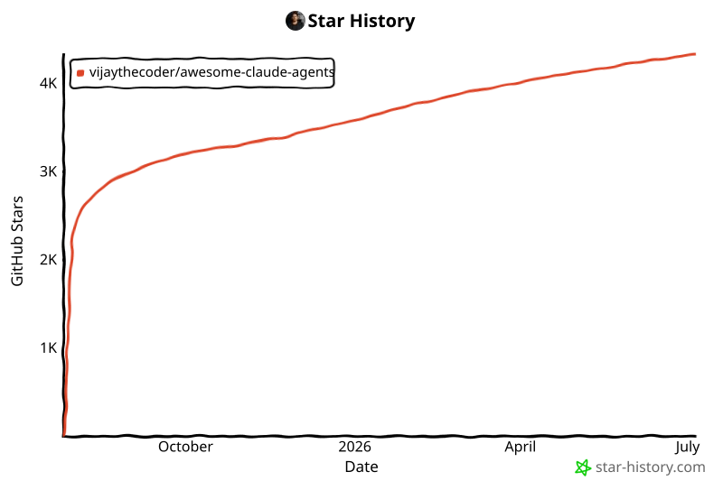

主页
主页
用一支各司其职的专家 AI 智能体团队给 Claude Code 加 buff:协同构建完整功能、调试复杂问题、以专家级知识应对任何技术栈。作者:vijaythecoder。
这是一个开源的 子智能体(subagent)合集:把 24 个写好的专职 agent 定义装进 Claude Code 的 ~/.claude/agents/,你的 Claude 就从「一个全能选手」变成「一支有技术主管、有框架专家、有 QA 的开发团队」——描述需求,团队自动检测你的技术栈并调度对口专家。
git clone https://github.com/vijaythecoder/awesome-claude-agents.git
方式 A · 软链接(推荐,自动跟进更新)——macOS/Linux:
# Create agents directory if it doesn't exist (preserves existing agents) mkdir -p ~/.claude/agents # Symlink the awesome-claude-agents collection ln -sf "$(pwd)/awesome-claude-agents/agents/" ~/.claude/agents/awesome-claude-agents
Windows(PowerShell):
# Create agents directory New-Item -Path "$env:USERPROFILE\.claude\agents" -ItemType Directory -Force # Create symlink cmd /c mklink /D "$env:USERPROFILE\.claude\agents\awesome-claude-agents" "$(Get-Location)\awesome-claude-agents\agents"
方式 B · 复制(静态,不自动更新):
# Create agents directory if it doesn't exist mkdir -p ~/.claude/agents # Copy all agents cp -r awesome-claude-agents/agents ~/.claude/agents/awesome-claude-agents
claude /agents # Should show all 24 agents.
进入项目目录,运行以下命令配置你的 AI 团队:
claude "use @agent-team-configurator and optimize my project to best use the available subagents."
claude "use @agent-tech-lead-orchestrator and build a user authentication system"
你的 AI 团队会自动检测技术栈、调用对口的专家!
@agent-team-configurator 会自动搭好最适合你的 AI 开发团队。被调用时它依次做六件事:
找到既有项目配置,并保留「AI Team Configuration」小节之外你的全部自定义内容。
检查 package.json、composer.json、requirements.txt、go.mod、Gemfile 及构建配置,理解你的项目。
扫描 ~/.claude/agents/ 和 .claude/ 文件夹,构建一张覆盖所有可用专家的能力表。
优先选择框架专属 agent 而非通用 agent;总是把 @agent-code-reviewer 和 @agent-performance-optimizer 纳入做质量保障。
创建带时间戳的「AI Team Configuration」小节,写入检测到的技术栈和一张「任务 | Agent | 备注」映射表。
展示检测到的栈、选中的 agents,并给出可直接开工的示例命令。
许可证:MIT License——在你的项目里自由使用!

这个项目把「子智能体」玩成了组织学:编排器管调度、专家管实现、核心团队管质量,并用 team-configurator 把整套阵容自动写进 CLAUDE.md。代价也写得很诚实——实验性、且一个复杂功能就可能烧掉 1–5 万 token。